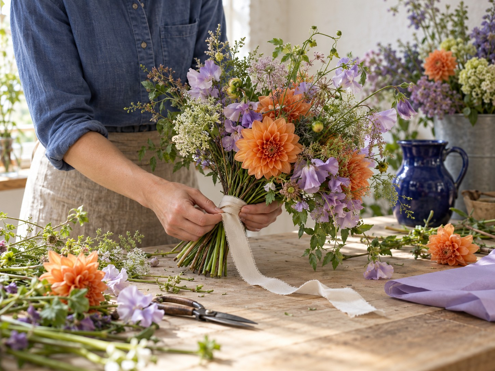

Boeketten van Faye.
Voor je eigen tafel, een verjaardag of iemand die wel wat bloemen kan gebruiken. Kies een boeket of bespreek een eigen idee.
Kies een boeket Bloemen voor een bruiloftOnze boeketten
Een losse vorm, verschillende kleuren en bloemen die elkaar aanvullen. Welke spreekt je aan?
2 keuzes zichtbaar
Bloemen voor jullie bruiloft
Het bruidsboeket, bloemen op tafel of een groot stuk bij de ceremonie. Neem beelden mee van de locatie en de kleuren die je mooi vindt. Dan kijken we samen wat bij de dag past.
Bespreek je bloemen
Gemaakt in het atelier.
We schikken elk boeket met de hand. Soms werkt een tak net wat mooier als je hem zijn eigen kant op laat gaan. Daar zit voor ons het plezier in.
Zo houd je bloemen langer mooi.
Een schone vaas.
Gebruik vers water en haal bladeren weg die onder water komen.
Snijd de stelen schuin af.
Gebruik een scherp mes of een goede bloemenschaar.
Geef ze een rustige plek.
Zet je boeket uit de felle zon en niet naast de verwarming.
Een vraag of een eigen idee?
Vertel voor welke gelegenheid je bloemen zoekt en welke kleuren je mooi vindt.